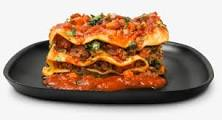

Cornish hens the easy way

This Cornish hen recipe is simple and adds a little zest to your Cornish hens.
- 4 cornish hens
- 2 limes halved
- 2 olive oil
- 1/4 teaspoon chilli powder
- 1/4 teaspoon ground cummin
- kosher salt and ground black pepper
STEPS
- preheat the oven to 425 degrees
- rub each hen with lime half.Drizzle with olive oil,then season with chilli powder,cumin ,kosher salt ,black pepper .place hens on the rack in a shallow roasting pan
- Roast hens in the preheated oven for 15 minutes
- Reduce oven temperatures to 350 degreesF (175 degrees C)
- continue roasting until it's no longer pink at the bone and the juices run clear,about 30 minutes,An instant-read thermometer inserted into the thickest part of the thigh ,near the bone ,should read 165 degrees F(74 degreesF).
- Remove from the oven ,cover with a doubled sheet of aluminum foil,and allow to rest in a warm area for 10 minutes before slicing